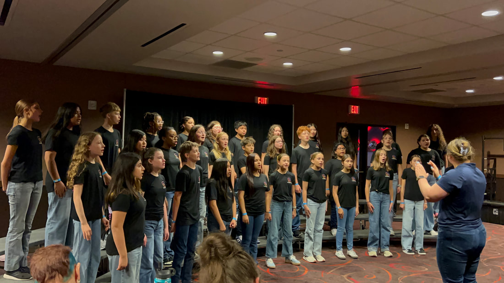
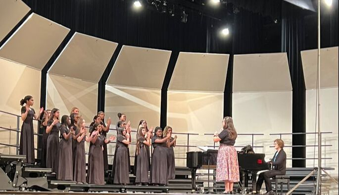
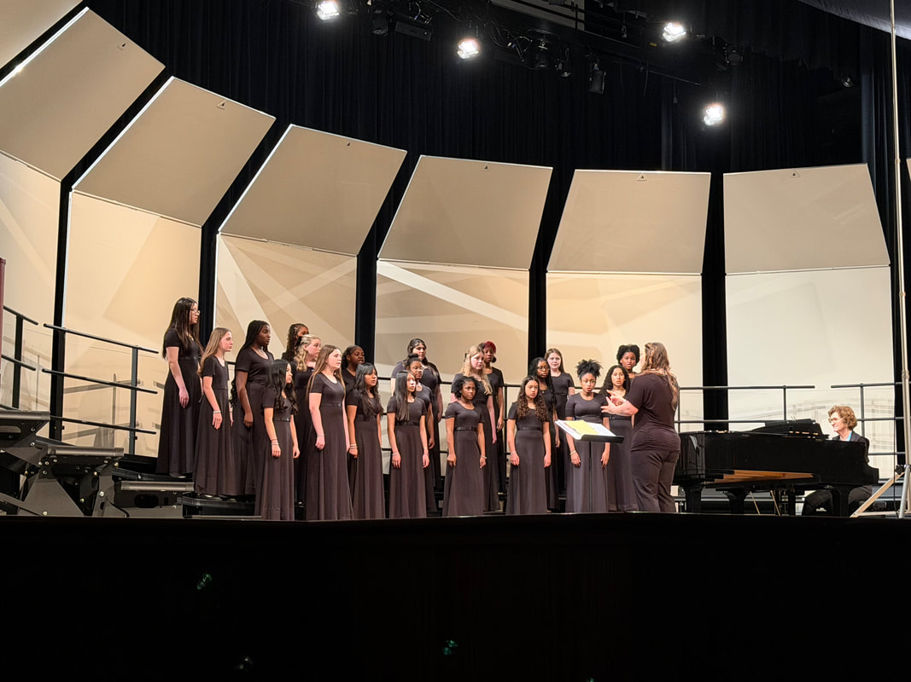
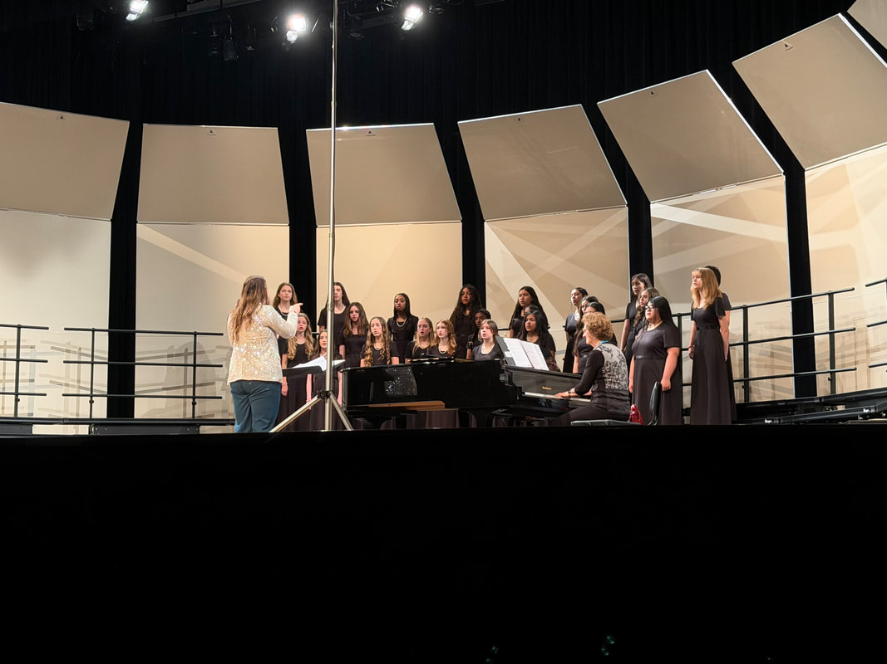
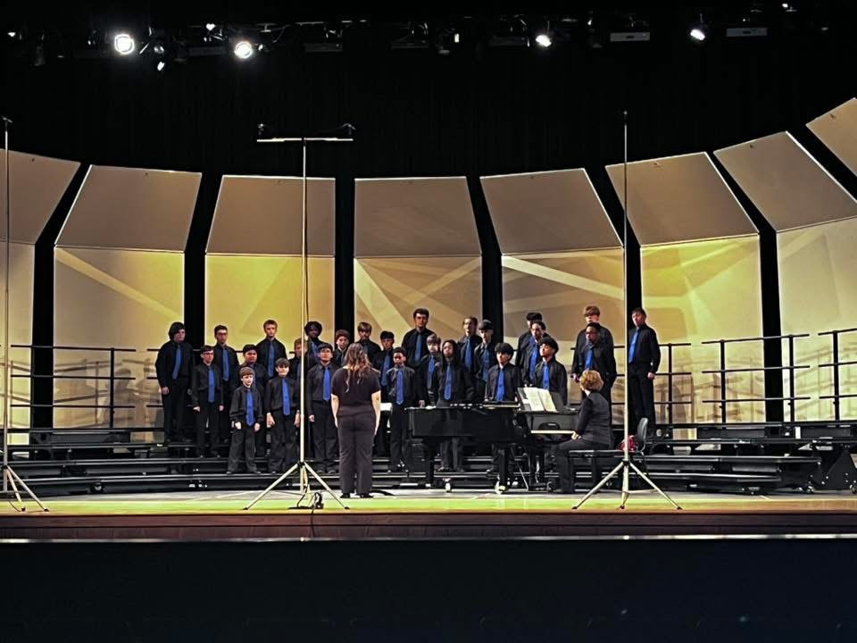
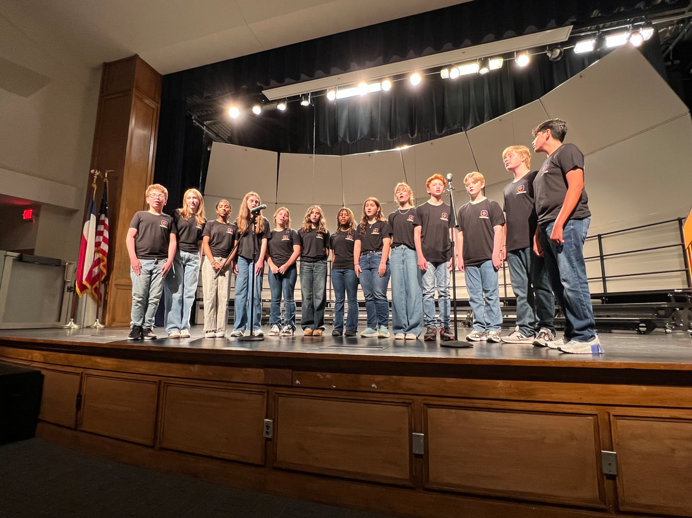

6th grade
Beginning Choir
The starting ensemble for new singers. Concerts use the choir t-shirt, blue jeans to the ankle, and closed-toe shoes. The year includes the Pride of Texas festival and a separate 6th-grade calendar.
Ensembles
Every singer is placed in a choir class. Synergy is an extra, auditioned group that rehearses before school.

6th grade
The starting ensemble for new singers. Concerts use the choir t-shirt, blue jeans to the ankle, and closed-toe shoes. The year includes the Pride of Texas festival and a separate 6th-grade calendar.

Treble
A treble choir for returning singers. Formal uniforms are issued from October through March: a black dress supplied by the program, with the singer’s own closed-toe black dress shoes.

Treble
A second treble choir, rehearsing and performing alongside Bel Canto. Extra “donut” rehearsals before concerts are on the 7th and 8th grade calendar.

Varsity treble
The varsity treble choir. Members are not required to do Solo & Ensemble or All-Region this year, and both are still encouraged. Selected singers also join the fine arts elementary tour.

Tenor and bass
The lower-voice choir. The program provides a black long-sleeved shirt and a blue tie. Singers bring black dress slacks, a black belt, black socks, and black dress shoes. Selected members may join Bella Voce on the elementary tour.

Before school · Tuesday
An auditioned mixed pop choir for 8th graders. Rehearsals are Tuesday mornings, 7:35–8:20 a.m. The group sings pop, classical, rock, jazz, and more. Audition details are on the choir Canvas page.